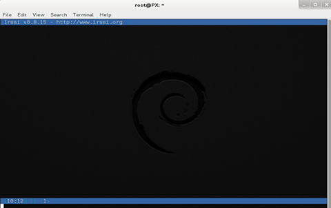
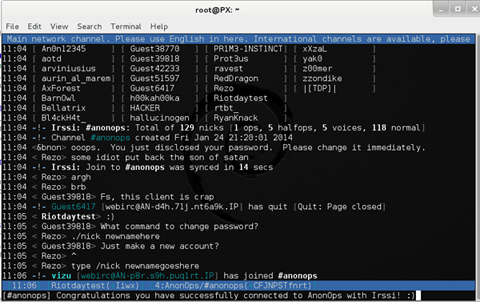

irssi IRC Client for Linux
This tutorial uses Debian as an example. The procedure is similar for other distros.
To begin, we first need the application. Open up a terminal and use your package manager and place it in the path of your choice.
Your package manager should have installed SSL. If not, do so now.
sudo apt-get install irssi
Next, run the program. In the terminal type:
irssi

Click here for a larger image.
This first run is done not only to test the program installed correctly but also to create the .irssi in the users home directory.
Type exit to close the program. Next, we configure the client to connect to AnonOpsIRC. This is done by editing the configuration file with your favorite editor, which is of course, nano.
nano ~/.irssi/config
The examples shown are copied from a working irssi client. You can copypasta them into your config file then save it.
NOTE: You need to replace YOURNICK and YOURPASSWORD with your own information.
First we want to add the servers:
servers = (
{
address = "irc.anonops.com";
chatnet = "AnonOps";
port = "6697";
use_ssl = "yes";
ssl_verify = "no";
autoconnect = "yes";
}
);
Next, we add the network and define a few things:chatnets = {
AnonOps = {
type = "IRC";
nick = "YOURNICK";
autosendcmd = "/msg nickserv identify YOURPASSWORD; wait 2000";
};
};
channels = (
{ name = "#anonops"; chatnet = "AnonOps"; autojoin = "yes"; },
);
You have now set the network to join, saved your nick and password and set to autojoin the main channel.You can edit this section later to add additional channels to autojoin on connect.
Next we will add some aliases. Aliases are shortened versions of standard IRC commands.
The configuration information below is available to download here. Just append it to the existing file using nano.
aliases = {
J = "join";
WJOIN = "join -window";
WQUERY = "query -window";
LEAVE = "part";
BYE = "quit";
EXIT = "quit";
SIGNOFF = "quit";
DESCRIBE = "action";
DATE = "time";
HOST = "userhost";
LAST = "lastlog";
SAY = "msg *";
WI = "whois";
WII = "whois $0 $0";
WW = "whowas";
W = "who";
N = "names";
M = "msg";
T = "topic";
C = "clear";
CL = "clear";
K = "kick";
KB = "kickban";
KN = "knockout";
BANS = "ban";
B = "ban";
MUB = "unban *";
UB = "unban";
IG = "ignore";
UNIG = "unignore";
SB = "scrollback";
UMODE = "mode $N";
WC = "window close";
WN = "window new hide";
SV = "say Irssi $J ($V) - http://irssi.org/";
GOTO = "sb goto";
CHAT = "dcc chat";
RUN = "SCRIPT LOAD";
CALC = "exec - if command -v bc >/dev/null 2>&1\\; then printf '%s=' '$*'\\; echo '$*' | bc -l\\; else echo bc was not found\\; fi";
SBAR = "STATUSBAR";
INVITELIST = "mode $C +I";
Q = "QUERY";
"MANUAL-WINDOWS" = "set use_status_window off;set autocreate_windows off;set autocreate_query_level none;set autoclose_windows off;set reuse_unused_windows on;save";
EXEMPTLIST = "mode $C +e";
ATAG = "WINDOW SERVER";
UNSET = "set -clear";
RESET = "set -default";
};
This section controls the look of the client window and the status bars. You can modify these later to suit your preferences.statusbar = {
# formats:
# when using {templates}, the template is shown only if it's argument isn't
# empty unless no argument is given. for example {sb} is printed always,
# but {sb $T} is printed only if $T isn't empty.
items = {
# start/end text in statusbars
barstart = "{sbstart}";
barend = "{sbend}";
topicbarstart = "{topicsbstart}";
topicbarend = "{topicsbend}";
# treated "normally", you could change the time/user name to whatever
time = "{sb $Z}";
user = "{sb {sbnickmode $cumode}$N{sbmode $usermode}{sbaway $A}}";
# treated specially .. window is printed with non-empty windows,
# window_empty is printed with empty windows
window = "{sb $winref:$tag/$itemname{sbmode $M}}";
window_empty = "{sb $winref{sbservertag $tag}}";
prompt = "{prompt $[.15]itemname}";
prompt_empty = "{prompt $winname}";
topic = " $topic";
topic_empty = " Irssi v$J - http://www.irssi.org";
# all of these treated specially, they're only displayed when needed
lag = "{sb Lag: $0-}";
act = "{sb Act: $0-}";
more = "-- more --";
};
# there's two type of statusbars. root statusbars are either at the top
# of the screen or at the bottom of the screen. window statusbars are at
# the top/bottom of each split window in screen.
default = {
# the "default statusbar" to be displayed at the bottom of the window.
# contains all the normal items.
window = {
disabled = "no";
# window, root
type = "window";
# top, bottom
placement = "bottom";
# number
position = "1";
# active, inactive, always
visible = "active";
# list of items in statusbar in the display order
items = {
barstart = { priority = "100"; };
time = { };
user = { };
window = { };
window_empty = { };
lag = { priority = "-1"; };
act = { priority = "10"; };
more = { priority = "-1"; alignment = "right"; };
barend = { priority = "100"; alignment = "right"; };
};
};
# statusbar to use in inactive split windows
window_inact = {
type = "window";
placement = "bottom";
position = "1";
visible = "inactive";
items = {
barstart = { priority = "100"; };
window = { };
window_empty = { };
more = { priority = "-1"; alignment = "right"; };
barend = { priority = "100"; alignment = "right"; };
};
};
# we treat input line as yet another statusbar :) It's possible to
# add other items before or after the input line item.
prompt = {
type = "root";
placement = "bottom";
# we want to be at the bottom always
position = "100";
visible = "always";
items = {
prompt = { priority = "-1"; };
prompt_empty = { priority = "-1"; };
# treated specially, this is the real input line.
input = { priority = "10"; };
};
};
# topicbar
topic = {
type = "root";
placement = "top";
position = "1";
visible = "always";
items = {
topicbarstart = { priority = "100"; };
topic = { };
topic_empty = { };
topicbarend = { priority = "100"; alignment = "right"; };
};
};
};
};
settings = {
core = { real_name = "SomeNameHere"; user_name = "YOURNICK"; nick = "YOURNICK"; };
"fe-text" = { actlist_sort = "refnum"; };
};
Save the config file now.
Wow. so config. many lines. much confusion.Now to run the program. In the terminal type irssi
Your terminal should look like this:

Click here for a larger image.
Everything look ok? Good. You have done well.
To cycle through the different channels you enter the /win command followed by the number of that window.
/win 1
/win 2
/win 3
Etc, etc. Note that irssi can have up to 14 channels opened at once. Each number represents a different channel.
You can also change windows by pressing ALT + (1-9). Using ALT + 0 displays window 10.
From there, ALT + (q-p) cycles thru windows 11-20. If you have any problems, first google any errors or read the documentation.
If you still need help, join #opnewblood from webchat
Tutorial and images by Riotday
Edits and HTML by elmo